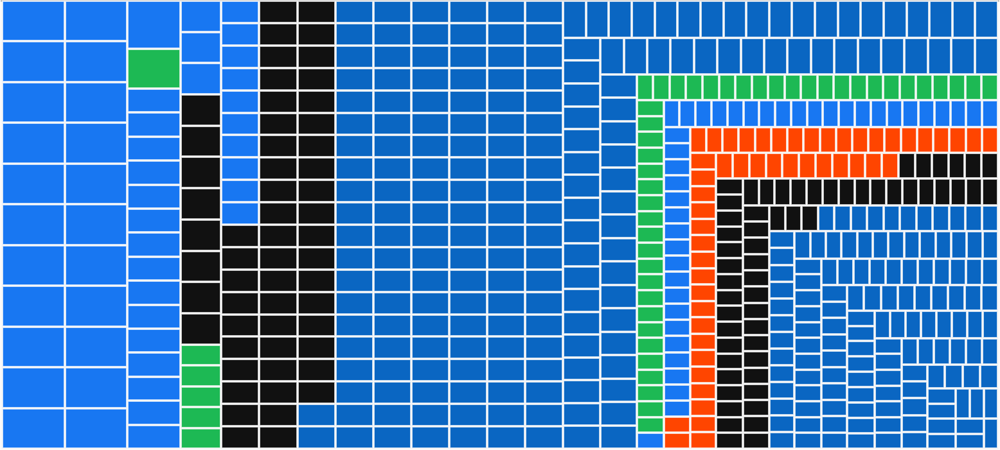

Agentic Privacy Control Center
An end-to-end system for discovering, structuring, visualizing, and safely modifying privacy settings across online platforms with agentic browser automation.
Quick Links
Introduction and Abstract
Modern digital platforms offer extensive privacy controls, yet in practice managing these settings is still difficult. Privacy options are often buried in platform-specific menus, described inconsistently, and distributed across multiple pages and confirmation dialogs.
This project reframes privacy configuration as a systems problem: automatically discover settings, normalize them into a common representation, and expose them through a centralized interface that supports both understanding and action.
The Agentic Privacy Control Center combines structured extraction, visualization, and browser-based agentic execution to help users and researchers inspect privacy settings across platforms without writing custom automation for each site.
Problem
Privacy controls exist, but accessibility and clarity remain significant barriers. Existing workflows typically require manual navigation, platform-specific knowledge, and repeated review of unclear option text before users can make informed decisions.
Motivation and Contribution
We propose an agentic privacy control center with two user-facing components: an interactive dashboard for cross-platform privacy setting exploration and an agentic chatbot that interprets natural-language requests and executes setting changes in the browser.
Key Contributions
- End-to-end pipeline for discovering and extracting privacy settings from heterogeneous interfaces.
- Normalized cross-platform privacy settings database for comparison and downstream analysis.
- Interactive dashboard for browsing settings by platform and privacy category.
- Planner-executor-verifier agent workflow for privacy setting modification without platform-specific hard-coding.
- Prototype validation showing reliable navigation of confirmation flows and UI variation.
System Overview
The system operates in three stages: collect settings from platform interfaces, structure the outputs into a shared schema, and expose the results through visualization and an agentic control layer.
- Extraction: deterministic crawling and vision-assisted parsing of settings pages.
- Normalization: semantic labeling and storage in a unified database.
- Interaction: dashboard inspection plus agentic execution for user-requested changes.
Abstract
Privacy by Design is increasingly important, but operationalizing privacy reviews and user configuration remains labor-intensive and difficult to scale. We present the Agentic Privacy Control Center, an end-to-end system that automatically discovers, structures, visualizes, and actuates privacy settings across online platforms. Our pipeline combines interface crawling, vision-based setting extraction, semantic classification, and a planner-executor-verifier browser agent powered by large language models. The resulting normalized settings database supports centralized inspection and safe privacy setting modification, demonstrating how agentic systems can serve as scalable intermediaries for privacy analysis and configuration workflows.
Methods
We built the system as a modular pipeline spanning data collection, structured storage, dashboard visualization, and agentic execution. The implementation is designed to support cross-platform privacy settings without tightly coupling logic to a single interface.
Data Pipeline
The data pipeline focuses on discovering privacy settings pages, extracting candidate controls, and transforming those observations into a normalized dataset that can be compared across platforms.
- Deterministic interface crawling to traverse settings menus and collect page-level evidence.
- Vision/text extraction to capture labels, control types, and surrounding context from heterogeneous UIs.
- Semantic categorization into shared privacy themes (e.g., visibility, authentication, data collection).
- Structured storage in a cross-platform schema to support dashboard queries and agent planning.

Dashboard and Visualization
We developed an interactive dashboard that provides a centralized view of extracted privacy settings and categories, making it easier to compare platform behavior and identify actionable controls.
- We developed an interactive dashboard that visualizes privacy settings across platforms, allowing users to explore categories such as data collection, authentication, and visibility controls. The dashboard transforms complex privacy configurations across platforms into a clear centralized overview to support informed decision making.
- Designed for fast inspection by both users (configuration support) and researchers (comparative analysis).
- Backed by the normalized schema so interface differences do not break the high-level view.

Agent Workflow
The agentic layer translates natural-language privacy requests into browser actions using a planner-executor-verifier pattern. This enables the system to adapt to interface variation while preserving safety checks before and after setting updates.
- Planner: interprets user intent and maps it to candidate platform settings and actions.
- Executor: navigates the platform UI, interacts with controls, and handles multi-step flows.
- Verifier: confirms that the intended setting state was reached and flags ambiguities.
- Supports confirmation dialogs and heterogeneous layouts without platform-specific hard-coded scripts.

Evaluation / Validation
Evaluation in this stage emphasizes system behavior and workflow reliability rather than final production deployment metrics. We validate whether the pipeline can consistently discover settings, preserve meaningful structure, and execute requested changes with verification.
- Pipeline validation: extracted settings are categorized and stored in a form usable by the dashboard and agent.
- Execution validation: the agent successfully navigates settings interfaces and confirmation flows.
- Verifier checks reduce silent failures by confirming post-action state whenever possible.
- High-level results indicate agentic automation is feasible for scalable privacy configuration support.
Discussion and Conclusion
Key results, interpretation, limitations, and future work.
Key Results and Insights
The prototype shows that privacy settings can be treated as a cross-platform structured problem rather than a collection of one-off manual workflows. Combining normalization with agentic execution creates a useful bridge between privacy analysis and direct configuration.
- Agentic browser automation can navigate heterogeneous privacy interfaces with limited platform-specific logic.
- A normalized settings database improves interpretability and supports comparison across platforms.
- Verification steps are essential when executing privacy changes to reduce ambiguity and user risk.
Limitations
- Prototype coverage is limited by platform variation, UI changes, and access/authentication constraints.
- Vision/LLM-based interpretation may misread labels or intent in ambiguous interfaces.
- Validation is currently high-level and should be expanded with broader platform and task benchmarks.
- Safety and rollback mechanisms need stronger guarantees before production deployment.
Future Work
Future work includes expanding platform coverage, improving semantic labeling quality, strengthening verifier and rollback behavior, and running more systematic evaluations of success rate, robustness, and user trust. A longer-term direction is integrating policy-aware guidance so the system can explain tradeoffs between convenience, visibility, and data sharing before applying changes.
Meet the Team
Sebastian Ferragut
Led the initial crawler prototype, designed and implemented the agentic chatbot (planner-executor-verifier), and supported end-to-end system integration and project coordination.
Nian-Nian Wang
Built the Gemini-powered database pipeline to extract UI text/state from screenshots, reconstruct URLs, annotate click depth, and semantically categorize settings for chatbot and dashboard use.
Jesse Huang
Improved crawler success rate to reach toggle pages, increased Gemini steering robustness, added click-count depth proxies, and cleaned/verified screenshot and URL captures for database ingestion.
Jimmy Huang
Led treemap and supporting visualization development, implemented cross-platform interaction views, and collaborated on fitting the visualization into the website experience.
Arya Verma
Co-implemented the visualization dashboard with a focus on website design and data compartmentalization, refining the interface to better communicate privacy design insights to technical and non-technical audiences.